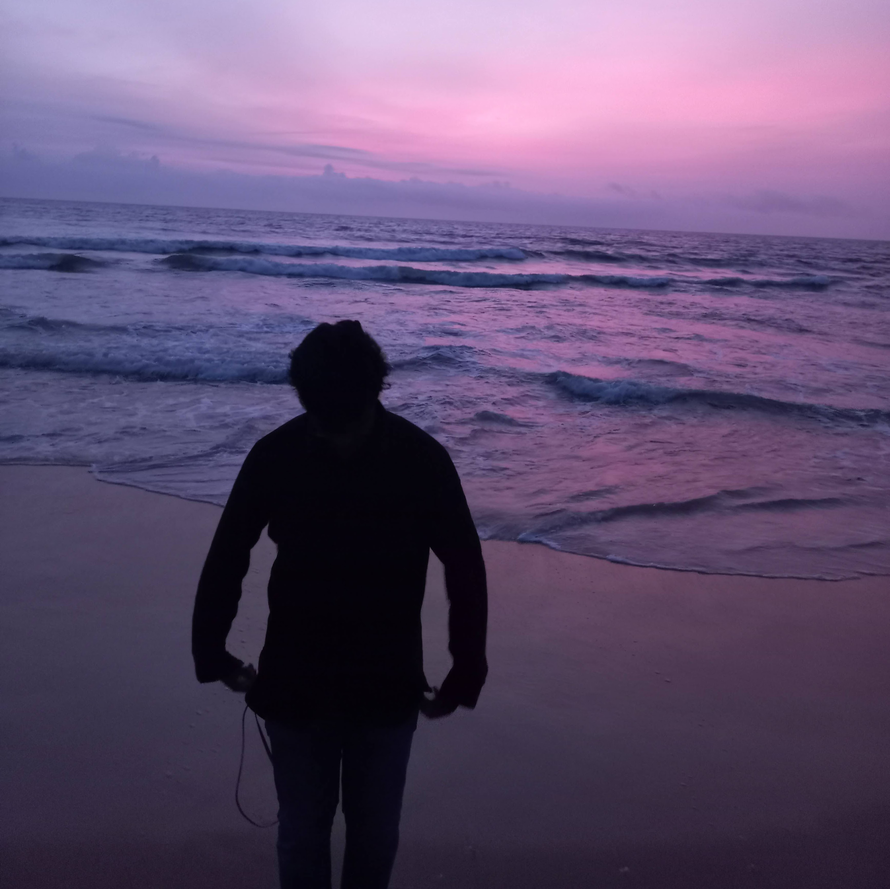

Aaryan Prakash's Resume

Summary
Aaryan Prakash, born on the 10th of March 2005, is a Computer Science Major at BMS College of Engineering in Bengaluru, India. Currently in his 2nd year, he's shown an increasing interest in web development and this webpage is his first exploration into the depths of it.
Education
- BMS College of Engineering(2023-2027)
- Delhi Public School, Bangalore South (2016-2023)
- National Hill View Public School(2009-2016)
Experience
- Management Team Member
Skills
- Marketing
- Sales
- Communication
- Writing
- Team Work
Licenses and Certifications
- C Programming
- Python Programming
Contact